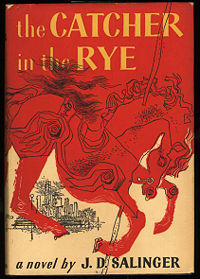

The Catcher in the Rye

by Jerome D. Salinger (1951)
Of course, people make such a fuss over it, they really do. You ask anyone. It's that Salinger's fault. He never listens to anyone. Sometimes I think he only writes it because he knows it gets on peoples goat. Writing about some crazy kid. I mean, I say he's crazy because that's what everyone says, but he's no crazier than the rest of us if you want to know the truth. Smoking and swearing getting laid, if he got half a chance. But it's only what anyone would have done, well, anyone with any sense, that is.
There's one thing about it though, it made me remember a time when I was very young, no joke, and I started reading this very book, I don't know where I got it, I think my Father gave it to me. But I don't think I got very far. It must have been beyond me, to tell you the truth. Well, you've got to give the old Pater his due, for trying to stretch you and all that. That's just like him, it really is.
Anyway, the story doesn't really go anywhere, at least not anywhere I could fathom. Well, things happen, but it's just everyday things over the few days after being expelled from school. The usual stuff. You could write a whole essay, I suppose, about whether or not Caulfield changes or learns anything by the novel's end, or simply remains an adolescent. But I don't think that would amount to very much. So it's a stylistic experience, at any rate. Very 'A Portrait of the Artist as a Young Man' I'm sure, and you've got to give him his due.
Rating: 7/10 - Bloody Salinger, he never listens to anyone, him.
Comments
Comments powered by Disqus